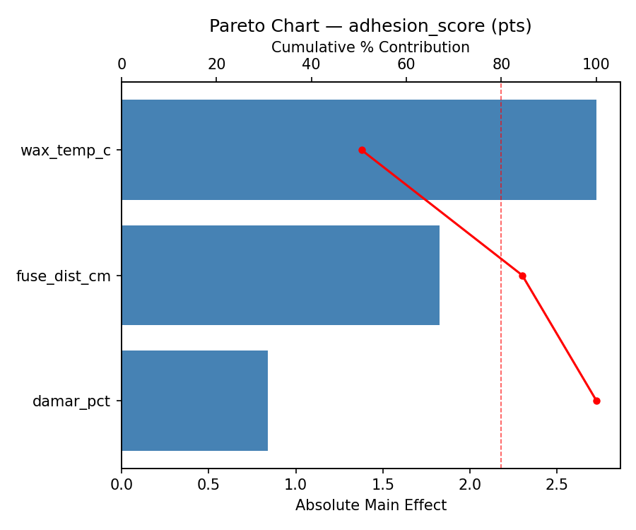
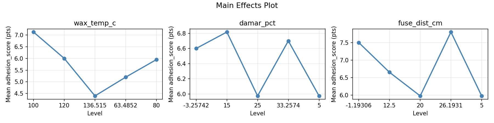
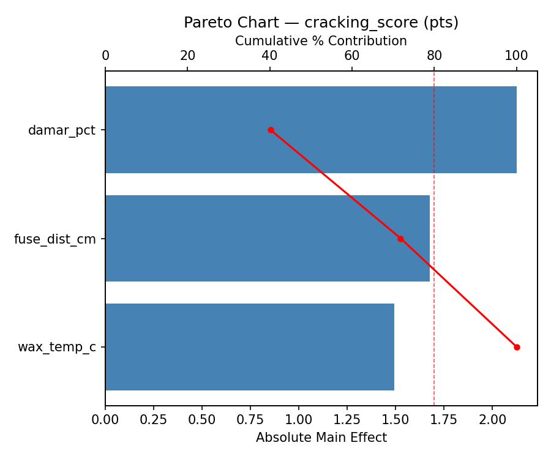
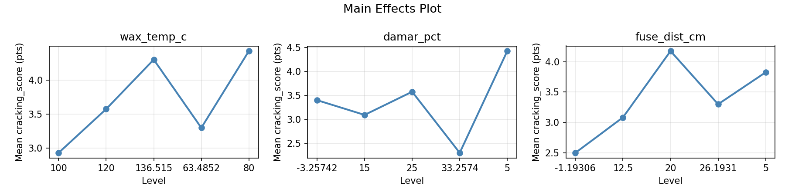
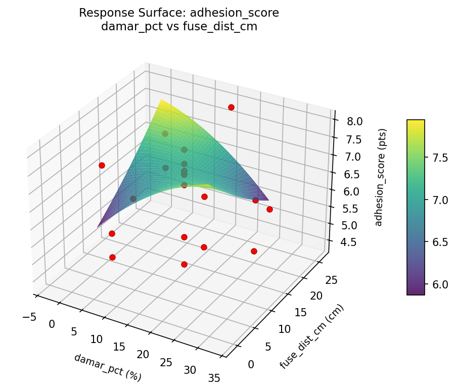
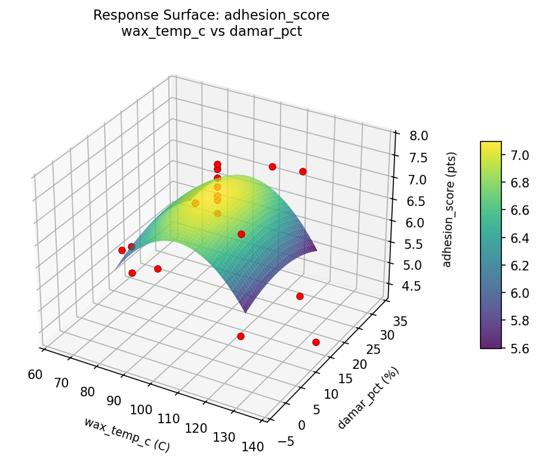
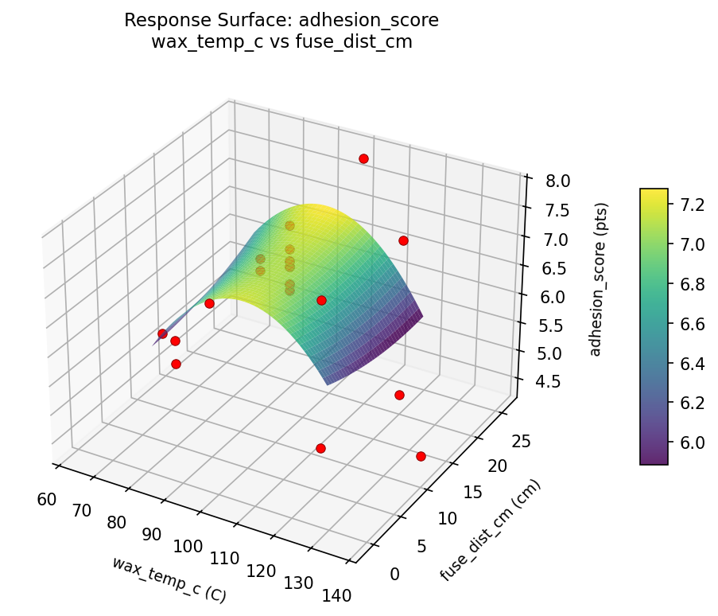
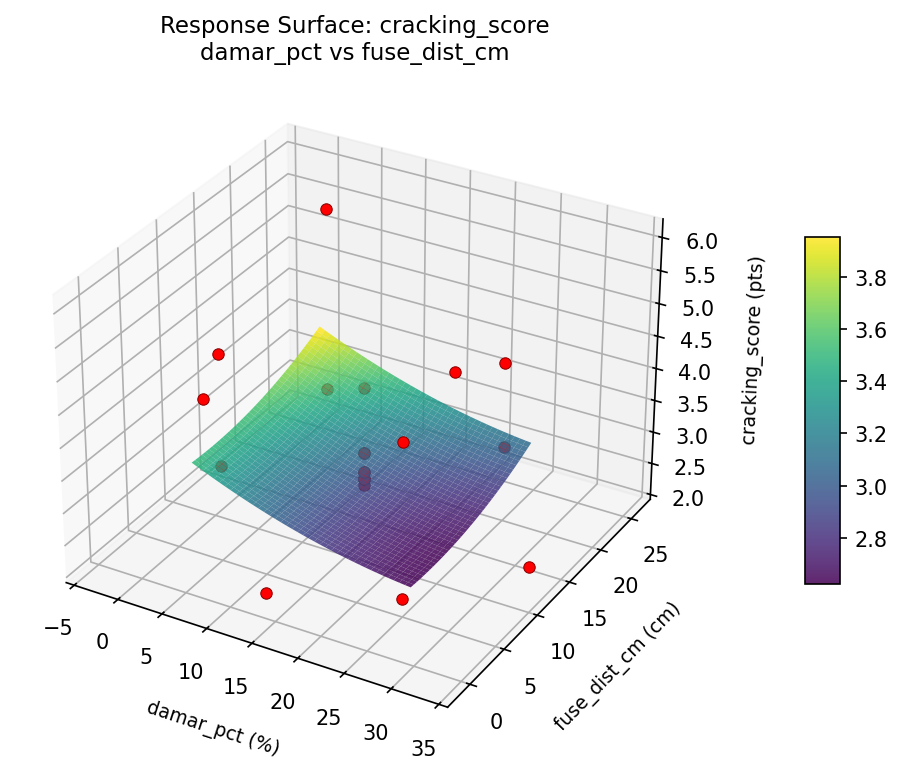
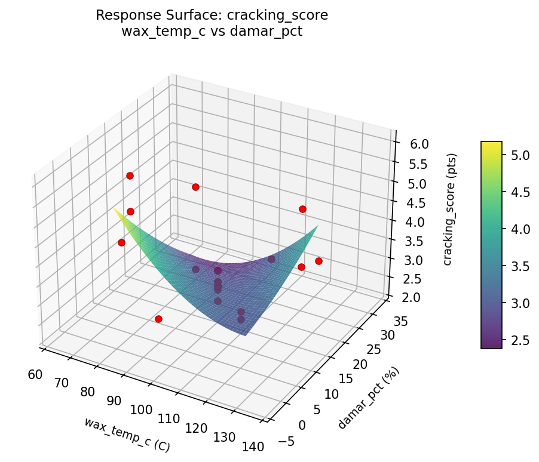
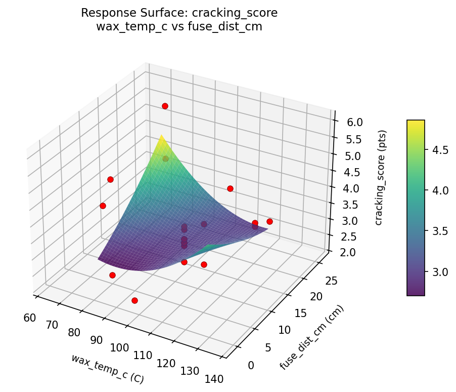

Summary
This experiment investigates encaustic wax painting. Central composite design to maximize adhesion and minimize cracking by tuning wax temperature, damar resin ratio, and fuse heat gun distance.
The design varies 3 factors: wax temp c (C), ranging from 80 to 120, damar pct (%), ranging from 5 to 25, and fuse dist cm (cm), ranging from 5 to 20. The goal is to optimize 2 responses: adhesion score (pts) (maximize) and cracking score (pts) (minimize). Fixed conditions held constant across all runs include wax = purified_beeswax, support = birch_panel.
A Central Composite Design (CCD) was selected to fit a full quadratic response surface model, including curvature and interaction effects. With 3 factors this produces 22 runs including center points and axial (star) points that extend beyond the factorial range.
Quadratic response surface models were fitted to capture potential curvature and factor interactions. The RSM contour plots below visualize how pairs of factors jointly affect each response.
Key Findings
For adhesion score, the most influential factors were wax temp c (50.5%), fuse dist cm (33.8%), damar pct (15.6%). The best observed value was 7.8 (at wax temp c = 136.515, damar pct = 15, fuse dist cm = 12.5).
For cracking score, the most influential factors were damar pct (40.2%), fuse dist cm (31.7%), wax temp c (28.2%). The best observed value was 2.2 (at wax temp c = 120, damar pct = 25, fuse dist cm = 5).
Recommended Next Steps
- Run confirmation experiments at the predicted optimal settings to validate the model.
- Consider whether any fixed factors should be varied in a future study.
Experimental Setup
Factors
| Factor | Low | High | Unit |
|---|
wax_temp_c | 80 | 120 | C |
damar_pct | 5 | 25 | % |
fuse_dist_cm | 5 | 20 | cm |
Fixed: wax = purified_beeswax, support = birch_panel
Responses
| Response | Direction | Unit |
|---|
adhesion_score | ↑ maximize | pts |
cracking_score | ↓ minimize | pts |
Configuration
{
"metadata": {
"name": "Encaustic Wax Painting",
"description": "Central composite design to maximize adhesion and minimize cracking by tuning wax temperature, damar resin ratio, and fuse heat gun distance"
},
"factors": [
{
"name": "wax_temp_c",
"levels": [
"80",
"120"
],
"type": "continuous",
"unit": "C"
},
{
"name": "damar_pct",
"levels": [
"5",
"25"
],
"type": "continuous",
"unit": "%"
},
{
"name": "fuse_dist_cm",
"levels": [
"5",
"20"
],
"type": "continuous",
"unit": "cm"
}
],
"fixed_factors": {
"wax": "purified_beeswax",
"support": "birch_panel"
},
"responses": [
{
"name": "adhesion_score",
"optimize": "maximize",
"unit": "pts"
},
{
"name": "cracking_score",
"optimize": "minimize",
"unit": "pts"
}
],
"settings": {
"operation": "central_composite",
"test_script": "use_cases/290_encaustic_wax/sim.sh"
}
}
Experimental Matrix
The Central Composite Design produces 22 runs. Each row is one experiment with specific factor settings.
| Run | wax_temp_c | damar_pct | fuse_dist_cm |
|---|
| 1 | 100 | 15 | 12.5 |
| 2 | 120 | 5 | 20 |
| 3 | 80 | 25 | 5 |
| 4 | 100 | 33.2574 | 12.5 |
| 5 | 100 | 15 | 12.5 |
| 6 | 63.4852 | 15 | 12.5 |
| 7 | 100 | 15 | -1.19306 |
| 8 | 100 | 15 | 12.5 |
| 9 | 120 | 25 | 5 |
| 10 | 136.515 | 15 | 12.5 |
| 11 | 100 | 15 | 12.5 |
| 12 | 100 | -3.25742 | 12.5 |
| 13 | 100 | 15 | 12.5 |
| 14 | 80 | 5 | 20 |
| 15 | 100 | 15 | 12.5 |
| 16 | 120 | 5 | 5 |
| 17 | 100 | 15 | 26.1931 |
| 18 | 120 | 25 | 20 |
| 19 | 100 | 15 | 12.5 |
| 20 | 80 | 5 | 5 |
| 21 | 80 | 25 | 20 |
| 22 | 100 | 15 | 12.5 |
Step-by-Step Workflow
1
Preview the design
$ python doe.py info --config use_cases/290_encaustic_wax/config.json
2
Generate the runner script
$ python doe.py generate --config use_cases/290_encaustic_wax/config.json \
--output use_cases/290_encaustic_wax/results/run.sh --seed 42
3
Execute the experiments
$ bash use_cases/290_encaustic_wax/results/run.sh
4
Analyze results
$ python doe.py analyze --config use_cases/290_encaustic_wax/config.json
5
Get optimization recommendations
$ python doe.py optimize --config use_cases/290_encaustic_wax/config.json
6
Generate the HTML report
$ python doe.py report --config use_cases/290_encaustic_wax/config.json \
--output use_cases/290_encaustic_wax/results/report.html
Features Exercised
| Feature | Value |
|---|
| Design type | central_composite |
| Factor types | continuous (all 3) |
| Arg style | double-dash |
| Responses | 2 (adhesion_score ↑, cracking_score ↓) |
| Total runs | 22 |
Analysis Results
Generated from actual experiment runs using the DOE Helper Tool.
Response: adhesion_score
Top factors: wax_temp_c (50.5%), fuse_dist_cm (33.8%), damar_pct (15.6%).
Pareto Chart

Main Effects Plot

Response: cracking_score
Top factors: damar_pct (40.2%), fuse_dist_cm (31.7%), wax_temp_c (28.2%).
Pareto Chart

Main Effects Plot

Response Surface Plots
3D surfaces fitted with quadratic RSM. Red dots are observed data points.
adhesion score damar pct vs fuse dist cm

adhesion score wax temp c vs damar pct

adhesion score wax temp c vs fuse dist cm

cracking score damar pct vs fuse dist cm

cracking score wax temp c vs damar pct

cracking score wax temp c vs fuse dist cm

Full Analysis Output
RSM surface: rsm_adhesion_score_wax_temp_c_vs_damar_pct.png
RSM surface: rsm_adhesion_score_wax_temp_c_vs_fuse_dist_cm.png
RSM surface: rsm_adhesion_score_damar_pct_vs_fuse_dist_cm.png
RSM surface: rsm_cracking_score_wax_temp_c_vs_damar_pct.png
RSM surface: rsm_cracking_score_wax_temp_c_vs_fuse_dist_cm.png
RSM surface: rsm_cracking_score_damar_pct_vs_fuse_dist_cm.png
=== Main Effects: adhesion_score ===
Factor Effect Std Error % Contribution
--------------------------------------------------------------
wax_temp_c 2.7250 0.2167 50.5%
fuse_dist_cm 1.8250 0.2167 33.8%
damar_pct 0.8417 0.2167 15.6%
=== Summary Statistics: adhesion_score ===
wax_temp_c:
Level N Mean Std Min Max
------------------------------------------------------------
100 12 7.1250 0.3864 6.6000 7.8000
120 4 6.0000 1.5122 4.5000 7.4000
136.515 1 4.4000 0.0000 4.4000 4.4000
63.4852 1 5.2000 0.0000 5.2000 5.2000
80 4 5.9500 0.2517 5.6000 6.2000
damar_pct:
Level N Mean Std Min Max
------------------------------------------------------------
-3.25742 1 6.6000 0.0000 6.6000 6.6000
15 12 6.8167 1.0080 4.4000 7.8000
25 4 5.9750 1.1843 4.5000 7.4000
33.2574 1 6.7000 0.0000 6.7000 6.7000
5 4 5.9750 0.9743 4.9000 7.2000
fuse_dist_cm:
Level N Mean Std Min Max
------------------------------------------------------------
-1.19306 1 7.5000 0.0000 7.5000 7.5000
12.5 12 6.6500 0.9279 4.4000 7.7000
20 4 5.9750 1.1147 4.5000 7.2000
26.1931 1 7.8000 0.0000 7.8000 7.8000
5 4 5.9750 1.0532 4.9000 7.4000
=== Main Effects: cracking_score ===
Factor Effect Std Error % Contribution
--------------------------------------------------------------
damar_pct 2.1250 0.1985 40.2%
fuse_dist_cm 1.6750 0.1985 31.7%
wax_temp_c 1.4917 0.1985 28.2%
=== Summary Statistics: cracking_score ===
wax_temp_c:
Level N Mean Std Min Max
------------------------------------------------------------
100 12 2.9333 0.3172 2.3000 3.4000
120 4 3.5750 0.6946 3.1000 4.6000
136.515 1 4.3000 0.0000 4.3000 4.3000
63.4852 1 3.3000 0.0000 3.3000 3.3000
80 4 4.4250 1.6215 2.2000 6.0000
damar_pct:
Level N Mean Std Min Max
------------------------------------------------------------
-3.25742 1 3.4000 0.0000 3.4000 3.4000
15 12 3.0917 0.4461 2.5000 4.3000
25 4 3.5750 1.1325 2.2000 4.6000
33.2574 1 2.3000 0.0000 2.3000 2.3000
5 4 4.4250 1.3525 3.2000 6.0000
fuse_dist_cm:
Level N Mean Std Min Max
------------------------------------------------------------
-1.19306 1 2.5000 0.0000 2.5000 2.5000
12.5 12 3.0833 0.4783 2.3000 4.3000
20 4 4.1750 1.3525 3.1000 6.0000
26.1931 1 3.3000 0.0000 3.3000 3.3000
5 4 3.8250 1.2971 2.2000 5.1000
Pareto chart (adhesion_score): use_cases/290_encaustic_wax/results/analysis/pareto_adhesion_score.png
Pareto chart (cracking_score): use_cases/290_encaustic_wax/results/analysis/pareto_cracking_score.png
Main effects (adhesion_score): use_cases/290_encaustic_wax/results/analysis/main_effects_adhesion_score.png
Main effects (cracking_score): use_cases/290_encaustic_wax/results/analysis/main_effects_cracking_score.png
Optimization Recommendations
=== Optimization: adhesion_score ===
Direction: maximize
Best observed run: #9
wax_temp_c = 136.515
damar_pct = 15
fuse_dist_cm = 12.5
Value: 7.8
RSM Model (linear, R² = 0.0857, Adj R² = -0.0666):
Coefficients:
intercept +6.4955
wax_temp_c -0.0599
damar_pct +0.1553
fuse_dist_cm +0.3148
RSM Model (quadratic, R² = 0.2630, Adj R² = -0.2897):
Coefficients:
intercept +6.6060
wax_temp_c -0.0599
damar_pct +0.1553
fuse_dist_cm +0.3148
wax_temp_c*damar_pct -0.1000
wax_temp_c*fuse_dist_cm +0.4500
damar_pct*fuse_dist_cm -0.3000
wax_temp_c^2 +0.0497
damar_pct^2 +0.0347
fuse_dist_cm^2 -0.2503
Curvature analysis:
fuse_dist_cm coef=-0.2503 concave (has a maximum)
wax_temp_c coef=+0.0497 negligible curvature
damar_pct coef=+0.0347 negligible curvature
Notable interactions:
wax_temp_c*fuse_dist_cm coef=+0.4500 (synergistic)
Predicted optimum (from linear model):
wax_temp_c = 100
damar_pct = 15
fuse_dist_cm = 26.1931
Predicted value: 7.0701
Model quality: Weak fit — consider adding center points or using a different design.
Factor importance:
1. fuse_dist_cm (effect: 2.2, contribution: 40.7%)
2. wax_temp_c (effect: 2.0, contribution: 37.5%)
3. damar_pct (effect: 1.2, contribution: 21.8%)
=== Optimization: cracking_score ===
Direction: minimize
Best observed run: #21
wax_temp_c = 120
damar_pct = 25
fuse_dist_cm = 5
Value: 2.2
RSM Model (linear, R² = 0.1217, Adj R² = -0.0246):
Coefficients:
intercept +3.4000
wax_temp_c -0.3088
damar_pct -0.1156
fuse_dist_cm +0.2057
RSM Model (quadratic, R² = 0.3917, Adj R² = -0.0646):
Coefficients:
intercept +3.2816
wax_temp_c -0.3088
damar_pct -0.1156
fuse_dist_cm +0.2057
wax_temp_c*damar_pct +0.4000
wax_temp_c*fuse_dist_cm +0.2750
damar_pct*fuse_dist_cm +0.1000
wax_temp_c^2 +0.3442
damar_pct^2 -0.1208
fuse_dist_cm^2 -0.0458
Curvature analysis:
wax_temp_c coef=+0.3442 convex (has a minimum)
damar_pct coef=-0.1208 concave (has a maximum)
fuse_dist_cm coef=-0.0458 negligible curvature
Notable interactions:
wax_temp_c*damar_pct coef=+0.4000 (synergistic)
Predicted optimum (from linear model):
wax_temp_c = 80
damar_pct = 5
fuse_dist_cm = 20
Predicted value: 4.0302
Model quality: Weak fit — consider adding center points or using a different design.
Factor importance:
1. wax_temp_c (effect: 2.8, contribution: 64.4%)
2. fuse_dist_cm (effect: 0.8, contribution: 18.6%)
3. damar_pct (effect: 0.7, contribution: 17.0%)